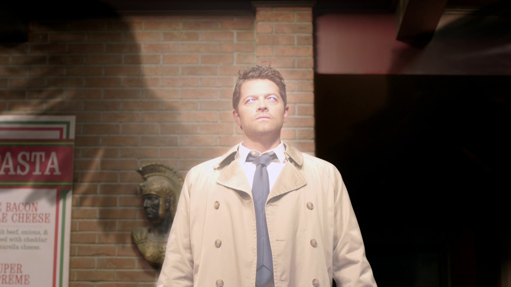
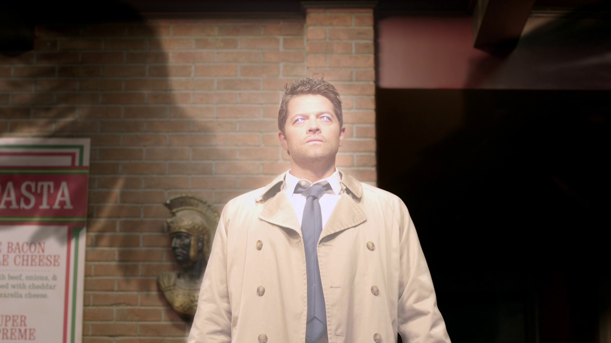

Sobrenatural
A série segue os irmãos Sam Winchester e Dean Winchester que viajam por toda a América em um Chevrolet Impala 1967 preto investigando e combatendo eventos paranormais e outras ocorrências inexplicáveis, muitas delas baseadas em lendas urbanas americanas e folclore, assim como diferentes criaturas sobrenaturais.
Sam e Dean Whinchester
Os irmãos Dean e Sam Winchester lideraram inúmeros combates contra demônios, fantasmas, vampiros e outros monstros sobrenaturais que vagavam no mundo dos vivos, muitas vezes custando as suas próprias vidas.
impala 67
O Impala é da marca Chevrolet Impala 1967 preto, pertence a Dean Winchester . Ela foi passada a ele por seu pai , que o comprou em 1973 depois de Dean convence-lo a comprar mais de um VW Van 1964 no episódio "No Inicio". Segundo Dean, o carro tem motor 327 e um carburador Barrel Quatro.
Mary Whinchester
A mãe de Sam e Dean representa muitas coisas dentro do seriado: ela é a figura materna que ressurge na vida dos rapazes após anos e se mostra uma mulher forte, uma caçadora perspicaz, uma líder nata. Mary também é o estopim da trama, o pontapé inicial. Afinal, Supernatural começa com a história dela.
Jhon Whinchester
John Andrew Winchester (1954-2006) foi o filho de Henry e Millie Winchester, marido de Mary Winchester, e pai de Dean e Sam Winchester e Adam Milligan. Vingando-se depois que sua esposa foi morta pelo demônio Azazel, John se tornou um caçador e criou seus dois filhos mais velhos para lutar contra o sobrenatural.
Bobby Singer
Seu personagem, Bobby Singer, foi um mentor importante para os irmãos Sam e Dean e foi presença fixa durante o início do seriado. Depois seu personagem morreu, mas isso não impediu que ele voltasse como um espírito, uma miragem e até mesmo uma versão alternativa.
Castiel
Castiel, um anjo caído , foi o responsável por tirar Dean Winchester do inferno, pela ordem de Deus. Era seu trabalho, prevenir que Lilith não quebrasse os 66 Selos que, uma vez quebrado, libertaria Lúcifer de sua gaiola.Uma vez Castiel viu que os anjos desejavam Lúcifer livre, ele desafiou seus irmãos angelicais e morreu tentando ajudar Dean a impedir que Sam Winchester quebrasse o último selo.